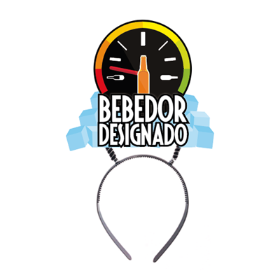

Artículos para cotillón
Creación de concepto y gráficas para productos de fiesta y celebración
Diseño, Ilustración y creación de troqueles

Creación de concepto y gráficas para productos de fiesta y celebración
Diseño, Ilustración y creación de troqueles
Diseño para portada de cuadernos Arte top con temáticas de ciudad del mundo.
Diseño y retoque de imágenes para montaje
Diseño para delantales impresos parrilleros con temática dieciochera guachaca
Diseño e ilustración de diseños